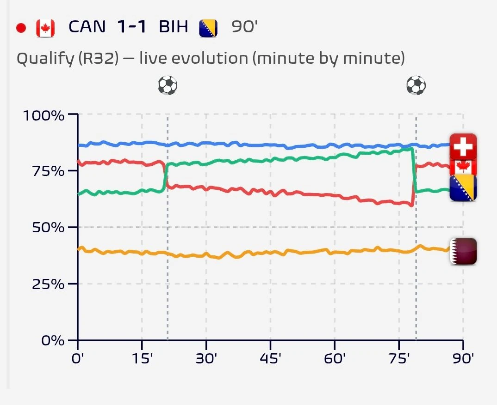
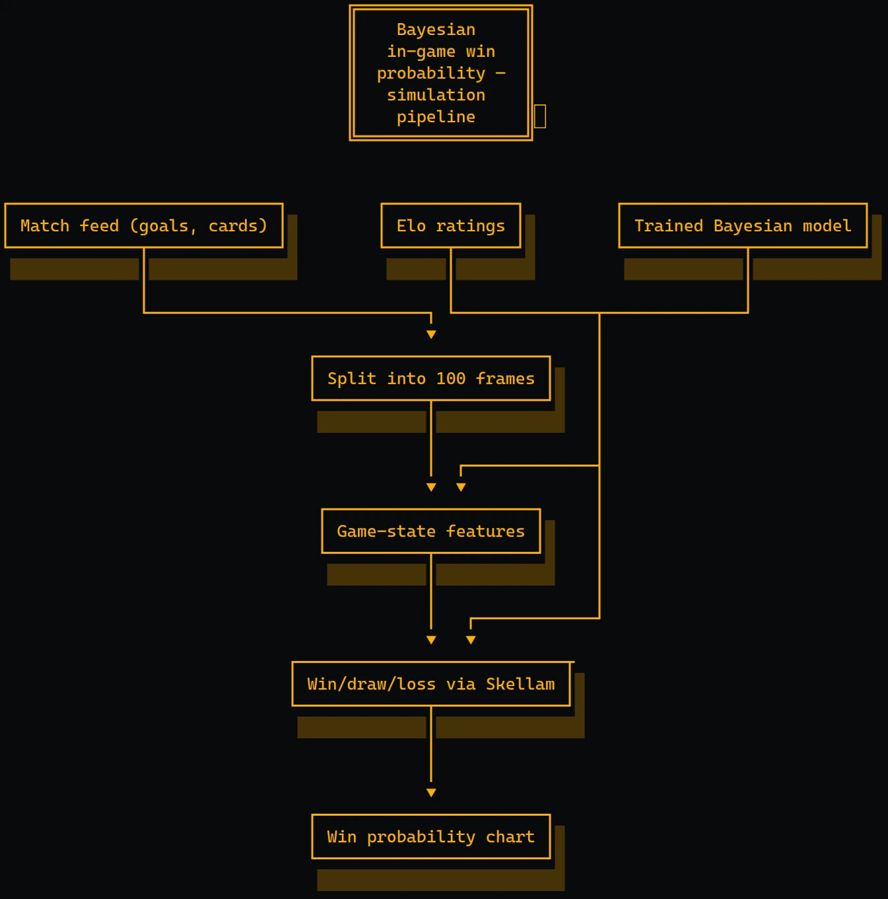
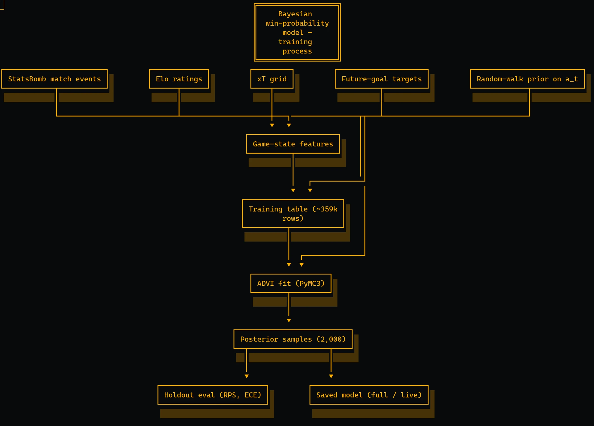
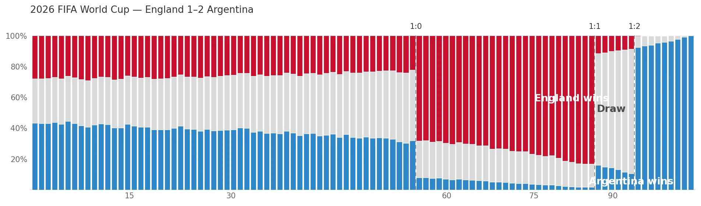

written by Roni Kobrosly on 2026-07-23 | tags: engineering statistics human data

The GitHub repo for this implementation can found here
Yeah I know the World Cup is already over, I was a little late to writing this up.
I'm not sure what it is about soccer, but I tend to see wayyyy more match win probabilities for it then for other sports. I don't mean on sports betting sites with odds, I mean everywhere: Google, the NYTimes, Nate Silver's blog (yes he's still alive), even dusty, old Yahoo. What is it about soccer specifically? Sincerely don't know 🤷🏻♂️
Many of these predictions are updated minute-by-minute, where the "Win" probability ticks up or down with each goal, and slowly converge towards 0% or 100% as the game ends. I wanted to investigate this. Robberecht et al.'s 2021 paper "A Bayesian Approach to In-Game Win Probability in Soccer" is a good starting point. It seems like many of these models are slight variations on the following approach...
The first problem is that time in soccer isn't uniform. Two matches that both read "30:00" on the clock have had different fractions of the actual game elapse, because stoppage time varies from match to match. Robberecht handles this by splitting every match into T = 100 frames, each covering a fixed fraction of the game's real duration, meaning wall-clock time including stoppage. Each half is divided into 50 frames of equal real length, so halftime is always exactly frame 50, whether the first half ran 45:00 or 47:30. I didn't fully get that detail for a bit.
For each frame we compute a set of game-state features for each team. The prediction target for a team at frame t is deliberately not "who wins." It is: how many more goals will this team score between now and the end of regulation?
If you get the above, the rest is easier to wrap your head around.
A Poisson distribution is the standard way to model "how many times will a random event happen in a fixed window?" In this case, how many goals a team scores in the time that's left.
At frame t, we model each team's remaining goals like this:
θ is a per-frame scoring intensity, roughly the team's goal rate right now. (T − t) is the number of frames still to play. Multiply them and you get the expected number of goals the team has left in it: rate × time remaining.
Robberecht treats the two teams' goal counts as independent. And yeah that's a pretty big simplification.

Where does that scoring intensity θ come from? It's computed from the current game state. Since θ has to stay between 0 and 1, so Robberecht passes the game state through a logistic function, which squashes any number into that range:
Reading the pieces:
x_t is the feature vector describing the game from one team's point of view (section 4).a_t is the matching vector of weights (how much each feature counts).β is the intercept, and Ha is a home-advantage term added only for the home team.In the trained model β ≈ −4.49. On its own that sets a baseline intensity of invlogit(−4.49) ≈ 0.011 goals per frame, about one goal per team over a full match before any features come into play.
The important part is that the weights a_t carry a t subscript. They're allowed to change as the game goes on, which is how the model can learn that a feature matters more in the 85th minute than in the 10th.
Every feature is computed at every frame:
| # | Feature | What it captures |
|---|---|---|
| 1 | game_time | Time step t/T |
| 2 | score_diff | Current goal differential |
| 3 | rating_diff | Elo rating difference between the teams |
| 4 | team_goals | Goals this team has scored so far |
| 5 | reds | Red-card differential |
| 6 | yellows | Opponent's accumulated yellow cards |
| 7 | opportunities | Goal-scoring chances per frame |
| 8 | attacking_passes | 10-frame rolling mean of completed passes into the final third |
| 9 | xt | 12-frame rolling mean of positive expected-threat (xT) gains from passes and carries |
| 10 | duel_strength | 10-frame rolling win rate in ground and aerial duels |
Features 7-10 need detailed event-stream data (locations, pass outcomes, duel results). That's tricky to get in real time. So the paper also defines a live variant model that keeps only features 1-6. THAT'S THE MODEL THAT WE TEND TO SEE ONLINE.
This is the core of the Bayesian setup. Rather than fixing one static weight per feature, the model lets each weight wander over the course of the match, but only gently. It does this with a Gaussian random-walk prior:
Put simply, a feature's weight at frame t is expected to relatively close to its value at frame t−1. The weights can drift smoothly across the game, but they pay a penalty for jerking around between neighboring frames.
All told, the model estimates 100 × 10 = 1,000 weights (or 600 weights for the live model version), plus β and Ha, all at once.
I had no idea what ADVI was before this experiment! The paper trains its models with Automatic Differentiation Variational Inference (ADVI) in PyMC3. I gather it's a way to speed up the Bayesian inference on large-ish datasetss.
In this repo, training feeds the model 358,974 rows (99 usable frames × 2 teams × 1,813 matches, dropping frame 100 since it has no time remaining) in mini-batches.

Once the model is trained, predicting for a match at frame t works like this.
1) Turn each posterior sample into two expected goal counts. Training leaves us with 2,000 posterior samples. Each one is a plausible version of the model, a full set of a_t, β, and Ha. For each sample, compute how many more goals each team is expected to score:
2) Write down what "home wins" means. The home team wins regulation if its final total beats the away total:
Let k = −(home_now − away_now), the negative of the current goal difference. Rearranging, the home team wins exactly when future_home − future_away > k.
3) Something called the Skellam distribution? I hadn't heard of it. This is where the independence assumption from section 2 pays off (that big simplification I mentioned): the difference of two independent Poissons follows a Skellam distribution. So once we have λ_home and λ_away, the win/draw/loss split for that one sample comes straight from a formula, with no need to simulate individual goals one by one:
4) Average across all 2,000 samples AKA play the game 2,000 times. Doing the Skellam step first and then averaging (rather than averaging the λ's and computing just once) is what carries the model's uncertainty all the way through into the final probabilities.
Notice that the current score enters through the offset k, not through a feature weight. Keep that in mind for section 10.
Section 4.4 of the paper covers deploying this live, when detailed event data isn't available. You need:
eloratings.net for nations). This is the rating_diff feature and the single strongest pre-game predictor.The live model then updates probabilities every frame using only the six features you can derive from goals, cards, and ratings.
A raw coefficient is not a feature importance. The weights a_t are on a per-unit scale, and the ten features have wildly different units. The fix is to standardize them. Multiply each weight by the feature's spread in the data (its standard deviation). That gives the effect on the log scoring-intensity of a realistic, 1-standard-deviation move in the feature.
| Feature | raw weight | feature SD | per-SD effect |
|---|---|---|---|
| Elo rating differential | +0.0016 | 177 | +0.29 |
| Red-card differential | −0.399 | 0.27 | −0.11 |
| Game time | −0.320 | 0.29 | −0.09 |
| Scoring opportunities | +1.219 | 0.06 | +0.07 |
| Score differential | −0.044 | 1.18 | −0.05 |
Very interestingly: home advantage has a decent effect on things. Ha ≈ +0.23 (full model) to +0.26 (live). Because the baseline intensity is small, that multiplies a team's per-frame scoring intensity by ≈ e^0.23 ≈ 1.25, a ~25% boost for playing at home in a non-neutral venue.
When all is said and done, you get this kind of output (which is based on the real England vs Argentina game):
